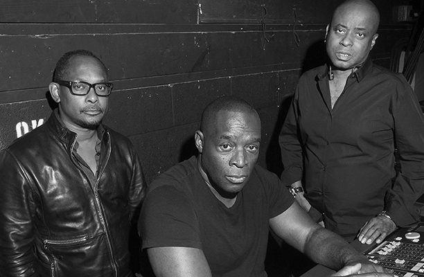

Techno берет начало с середины 80-х годов и считается формой популярной электронной, танцевальной музыки. Термин начали использовать для определения музыкального жанра только в 1988 году. На текущий момент существует несколько стилей, а также поджанров техно. Появление во многом соотносится с хаус музыкой, фанком и электро, а среди проотцов считаются Kraftwerk, Yellow Magic Orchestra и Giorgio Moroder. Еще одним пионером, который занимался и создавал прото-техно, является Хуан Аткинс. Именно этот музыкант зародил основную стилистику, придал футуристический акцент и дал шанс стать музыке отдельным жанром. Среди последователей продюсера и диджея выделяются Деррик Мэй, Фрэнки Наклз и другие. Стилистика обладает повторяющимися ритмами от 120 до 150 ударов. Для создания применяются драм-машины, синтезаторы и цифровые станции.
